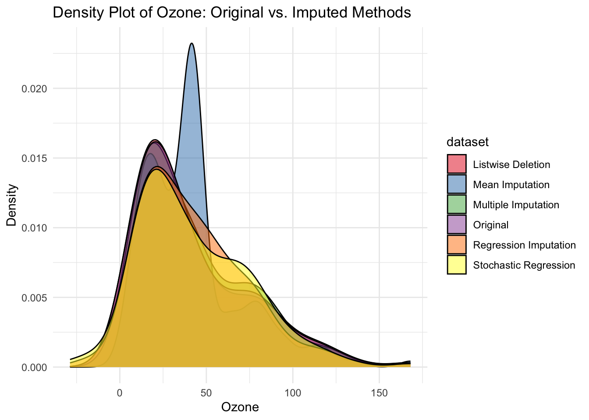

Missing data is a common problem and dealing with it appropriately is extremely important. Ignoring the missing data points or filling them incorrectly may cause the models to work in unexpected ways and cause the predictions and inferences to be biased.
Le’ts consider built-in dataset ‘airquality’ in R as a sample dataset.
# Load the airquality datasetlibrary(skimr)data("airquality")skim(airquality)
Data summary
Name
airquality
Number of rows
153
Number of columns
6
_______________________
Column type frequency:
numeric
6
________________________
Group variables
None
Variable type: numeric
skim_variable
n_missing
complete_rate
mean
sd
p0
p25
p50
p75
p100
hist
Ozone
37
0.76
42.13
32.99
1.0
18.00
31.5
63.25
168.0
▇▃▂▁▁
Solar.R
7
0.95
185.93
90.06
7.0
115.75
205.0
258.75
334.0
▅▃▅▇▅
Wind
0
1.00
9.96
3.52
1.7
7.40
9.7
11.50
20.7
▂▇▇▃▁
Temp
0
1.00
77.88
9.47
56.0
72.00
79.0
85.00
97.0
▂▃▇▇▃
Month
0
1.00
6.99
1.42
5.0
6.00
7.0
8.00
9.0
▇▇▇▇▇
Day
0
1.00
15.80
8.86
1.0
8.00
16.0
23.00
31.0
▇▇▇▇▆
library(naniar)
Attaching package: 'naniar'
The following object is masked from 'package:skimr':
n_complete
Examine this dataset for missing values. While there are many ways to do this, the skim function from the library ‘skimr’ is elegant;
17 missing from Ozone and 7 missing from Solar.R
use the nanair package to visualize missing values
DONE
even though it’s hard to confirm based on visualizations alone, what do your visualizations lead you to believe about the missing data being MCAR, MAR, or MNAR?
Ozone may be missing MCAR since it is really spread out, not so sure about Solar.R.
Carry out Little’s statistical test to evaluate MCAR and report results.
result suggests it is not MCAR
Creating a binary indicator for missingness allows you to test whether the presence of missing data is related to observed data.
For instance, you can create a dummy variable: 1 = Missing; 0 = Observed.
Next you can conduct a chi-square test or t-test:
Chi-square: Compare proportions of missingness across groups.
T-test: Compare means of (other) observed variables with missingness indicators.
it looks like the values are more likely to be missing in certain period of time but not certain temperature.
# Create a binary indicator for Ozone missingnessairquality$Ozone_miss <-ifelse(is.na(airquality$Ozone), 1, 0)# Create a binary indicator for Solar.R missingnessairquality$Solar_miss <-ifelse(is.na(airquality$Solar.R), 1, 0)# T-test to compare mean temperature between records with and without missing Ozonet_test_result <-t.test(Temp ~ Ozone_miss, data = airquality)print(t_test_result)
Welch Two Sample t-test
data: Temp by Ozone_miss
t = -0.026831, df = 60.447, p-value = 0.9787
alternative hypothesis: true difference in means between group 0 and group 1 is not equal to 0
95 percent confidence interval:
-3.643306 3.546847
sample estimates:
mean in group 0 mean in group 1
77.87069 77.91892
t_test_result <-t.test(Temp ~ Solar_miss, data = airquality)print(t_test_result)
Welch Two Sample t-test
data: Temp by Solar_miss
t = 0.98706, df = 6.2689, p-value = 0.3602
alternative hypothesis: true difference in means between group 0 and group 1 is not equal to 0
95 percent confidence interval:
-7.436381 17.669258
sample estimates:
mean in group 0 mean in group 1
78.11644 73.00000
# Chi-square test to check if Ozone missingness is related to Monthtable_month_miss <-table(airquality$Month, airquality$Ozone_miss)chi_test_result <-chisq.test(table_month_miss)print(chi_test_result)
Create new and appropriately named datasets that are based on airquality for each of the following ways of fixing the dataset:
- (a) "listwise deletion" or "complete case analysis" --- where entire records from the analysis are removed if they are missing any data point in one or more variables
- (b) Imputation with mean --- involves filling in the missing values with the mean of the available values in the same variable.
- (c) Imputation with regression (use mice package)
- (d) Imputation with stochastic regression (use mice package)
- (e) Imputation with multiple induction (use mice package, 5 imputations, and Predictive mean matching method)
The following object is masked from 'package:stats':
filter
The following objects are masked from 'package:base':
cbind, rbind
# (c) Regression imputation# Need to properly use complete() to get the imputed datasetimp_reg <-mice(airquality, method ="norm.predict", m =1, maxit =5, printFlag =FALSE)
Warning: Number of logged events: 10
airquality_regression <-complete(imp_reg)# (d) Stochastic regression imputation# Need to properly use complete() to get the imputed datasetimp_stoch <-mice(airquality, method ="norm.nob", m =1, maxit =5, printFlag =FALSE)
Warning: Number of logged events: 10
airquality_stoch_regression <-complete(imp_stoch)# (e) Multiple imputation with PMM# For multiple imputation, we need to specify the method for all variablesimp_multi <-mice(airquality, method ="pmm", m =5, maxit =5, printFlag =FALSE)
Warning: Number of logged events: 50
# For comparison purposes, we'll extract the first imputed datasetairquality_multiple <-complete(imp_multi, 1)
Question 3:
Compare the eventual distribution from these datasets on the variable ’Ozone’against the orgiinal. Below is a template that considers only 2 datasets but please consider all the datasets you generated within a single plot
# ggplot(airquality, aes(x=Ozone, fill="Original")) +# geom_density(alpha=0.5) +# geom_density(data=dataset_listwise_deletion, aes(x=Ozone, fill="Listwise Deletion"), alpha=0.5) +# labs(title="Density Plot of Ozone: Original vs. Imputed")# Load ggplot2library(ggplot2)library(reshape2)# Create a dataset for plotting# First, we need to gather all datasetsairquality_original <- airqualityairquality_original$dataset <-"Original"airquality_listwise$dataset <-"Listwise Deletion"airquality_mean$dataset <-"Mean Imputation"airquality_regression$dataset <-"Regression Imputation"airquality_stoch_regression$dataset <-"Stochastic Regression"airquality_multiple$dataset <-"Multiple Imputation"# Combine all datasetsall_datasets <-rbind( airquality_original[, c("Ozone", "dataset")], airquality_listwise[, c("Ozone", "dataset")], airquality_mean[, c("Ozone", "dataset")], airquality_regression[, c("Ozone", "dataset")], airquality_stoch_regression[, c("Ozone", "dataset")], airquality_multiple[, c("Ozone", "dataset")])# Create the density plotggplot(all_datasets, aes(x = Ozone, fill = dataset)) +geom_density(alpha =0.5) +labs(title ="Density Plot of Ozone: Original vs. Imputed Methods",x ="Ozone", y ="Density") +theme_minimal() +scale_fill_brewer(palette ="Set1")
Warning: Removed 37 rows containing non-finite outside the scale range
(`stat_density()`).

What do you observe?
All every other distributions look very similar to the original dataset except for the mean imputation.
Of course, each dataset you produced will lead to different modeling results, but we won’t go into that in today’s lab.